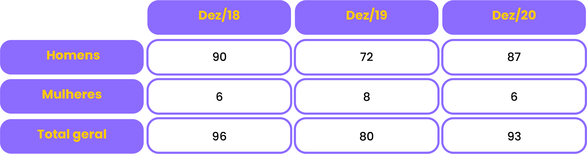

Na tabela abaixo, podemos ver alguns dados dos últimos três anos referentes a mortes por suicídio entre as pessoas privadas de liberdade.
Em relação aos dados sobre suicídio dos servidores do sistema penitenciário, ainda não existe um levantamento nacional sobre o assunto.